Repsol transforma el crudo y diversas materias primas alternativas (residuos urbanos, forestales, agrícolas y de la industria agroalimentaria) en productos de valor añadido, como carburantes, biocombustibles sostenibles (hidrobiodiésel, biogas, biojet...) y materiales neutros en carbono.
Contrata servicios de ingeniería y construcción, así como numerosos servicios de mantenimiento.
Repsol produce y comercializa una amplia variedad de productos petroquímicos, que se usan para fabricar objetos cotidianos que mejoran la calidad de vida, el bienestar y la seguridad de las personas y se encuentran en casi la totalidad Informe de Gestión | Nuestra Compañía P20 P21 de los segmentos industriales.
Contrata servicios de ingeniería y construcción, así como numerosos servicios de mantenimiento, logística operativa, transporte y distribución.
Repsol distribuye y comercializa gas licuado de petróleo en España, Portugal y Francia. Lo hace en distintos formatos: envasado, a granel y AutoGas.
Mantenimiento de flota de distribución: compra y mantenimiento de envases de gas (bombonas) y servicios de mantenimiento de factorías de GLP.
Repsol cuenta con proyectos de generación de electricidad de bajas emisiones (centrales hidroeléctricas, ciclos combinados, plantas de cogeneración, parques eólicos y fotovoltaicos) y está construyendo nuevos activos renovables para aumentar su capacidad.
Repsol suministra gas y electricidad de bajas emisiones en España, y ofrece a sus clientes soluciones digitales de vanguardia, como el autoconsumo (Solify) y la generación distribuida (Solmatch).
Repsol desarrolla, produce y comercializa lubricantes, especialidades derivadas del petróleo y betunes para asfaltos en más de 90 países.
Acuerdos con productores alrededor del mundo, contratación servicios de ingeniería, logística, transporte y distribución.
Los hidrocarburos producidos se trasportan para abastecer de materia prima a las refinerías de Repsol o bien se comercializan en los mercados internacionales.
Mantenimiento de oleoductos y gaseoductos y contratación de buques petroleros y butaneros.
Repsol extrae los hidrocarburos del yacimiento para comercializarlos. Además, se realizan labores de mantenimiento, control y transporte, siguiendo las mismas políticas de sostenibilidad y seguridad de fases anteriores.
Necesita servicios de operación y mantenimiento de esas facilidades.
Se perforan pozos, se construyen sistemas de recolección y plantas de procesamiento y sistemas de evacuación y transporte, siempre bajo políticas de sostenibilidad, seguridad y transparencia que garantizan el buen desarrollo del proyecto.
Necesita servicios de ingeniería y construcción de instalaciones.
Tras la adquisición de un nuevo dominio minero Repsol realiza trabajos de geología y geofísica, estudios de impacto medioambiental y sondeos exploratorios para evaluar su potencial, un proceso en el que se aplican las últimas tecnologías digitales en el análisis de la información.
Necesita servicios de geología y datos de sísmica, así como servicios de perforación onshore y offshore.
Repsol comercializa gas natural en Norteamérica, donde cuenta con una planta de regasificación de GNL en Canadá. Además, comercializa GNL y gas natural a clientes mayoristas en España.
Para favorecer una movilidad más sostenible, Repsol lidera el desarrollo de combustibles más eficientes, el suministro de soluciones alternativas como el AutoGas o el Gas Natural Vehicular y la apuesta por la recarga eléctrica y la movilidad compartida a través de Wible, todo ello con el foco puesto en prestar la mejor atención y servicio a sus clientes a través de la aplicación Waylet.